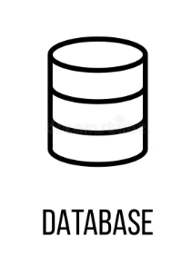

Adatbázisrendszerek
Kezdőlap
HTML 5 nyelv alapjai
Prezentáció készítése
Adatbázisrendszerek Kurzus Tematika
Adatbázisok alapfogalmai
Relációs adatbázisok tervezése
SQL nyelv alapjai
Adatbázis-kezelő rendszerek áttekintése
Adatbázisok optimalizálása
Gyakorlás vizsgára
